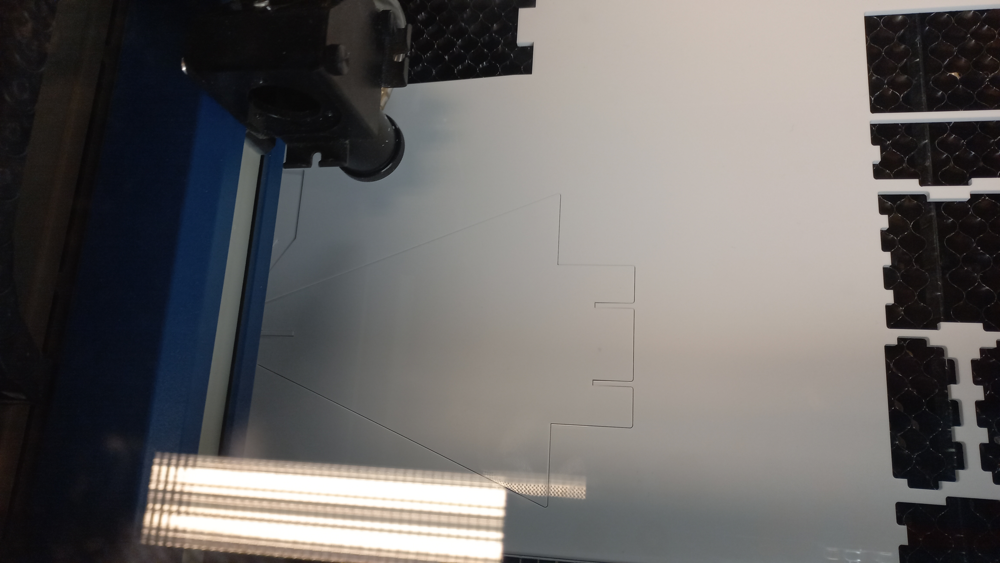
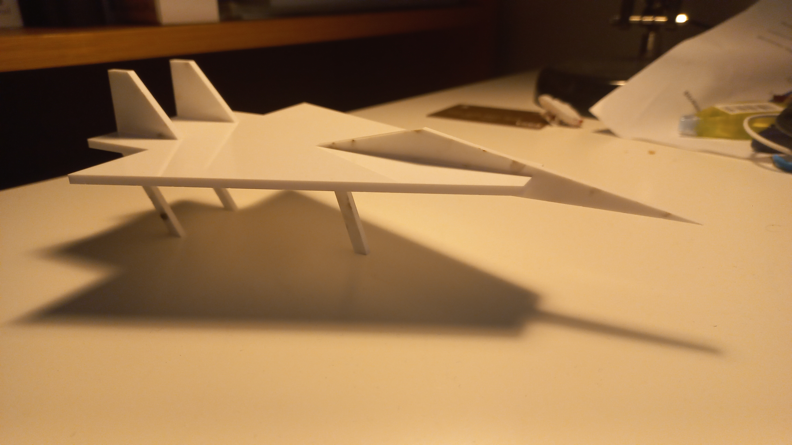

Project 2
Vinyl cutting
The second project in this course was in multiple parts. In no particular order, students had to use a vinyl cutter to make a small sticker, and then use a laser cutter to make an object assembled of pressfit pieces.
 To make a sticker, we had a limited size of 100x50mm. We were allowed to draw a picture or use any picture from the internet. One of my friends chose the cartoon dog Droopy which inspired me to use a picture of the tasmanian devil aka Taz. I have no particular attachment to the character, it seemed fun to make a sticker of him. So I googled "Taz", found this picture, copied it, and pasted it in inkscape.
To make a sticker, we had a limited size of 100x50mm. We were allowed to draw a picture or use any picture from the internet. One of my friends chose the cartoon dog Droopy which inspired me to use a picture of the tasmanian devil aka Taz. I have no particular attachment to the character, it seemed fun to make a sticker of him. So I googled "Taz", found this picture, copied it, and pasted it in inkscape.
Then I set the size of the document at 100x50mm and did my best to fit Taz in there and keep logical dimensions. I clicked on path, TRUC TRUC.
After that I selected the image, set no fill, flat color in stroke paint and 0.02mm width in stroke style. Then I saved the file as a pdf, and uploaded it to the teacher's computer which was connected to the cutter. I inserted orange paper and started cutting.
After the cut, I had to carefully remove the pieces, small or big so that I only had the outlines that draw Taz left. Then I put painting tape all over the sticker, removed the white sheet, placed the sticker on my phone, and removed the tape. Now my phone has a lovely picture of Taz on it. Too bad the sounds don't come with. You can see this process in the pictures below.
.jpg)
.jpg)
.jpg)
.jpg)
.jpg)
Laser cutting
So then I had to decide what I was gonna do for a pressfit model. I thought it through and decided I didn't really need anything at home, and so decided to just make a toy. I wanted it to be rather simple but still a bit original and not use the box shape. So i decided to make a small toy plane. We had 500x500mm to work with but I knew from the start my plane was not going to take up all the space on the plate. Last thing I want at home is a huge plane I can't put anywhere. I found a bit of inspiration on the internet and designed my own plane using Fusion360. The most important part is to have every dimension parametric. To do that you go to modify -> change parameters and add new parameters to fit all your dimensions. So I made the base, basically the body of the plane, then two drifts at the back and the nose and cockpit. I didn't think of mirroring so I drew both drifts separately. It was not convenient because if I wanted to change dimensions I had to do it twice.
The laser in the laser cutter takes away some matter from the parts. So before cutting the parts of the object, we have to estimate the diameter of the laser, or kerf. To do that we drew on Fusion360 a certain number of blocks, had them cut, then aligned them, mesured the total distance and divided it by the number of blocks. The kerf we found and which I used was 0.18mm.
After I was done designing the pressfit model the way it's supposed to look and finding the kerf, I had to prepare it for the cutter. To do that I used the align function to set all parts on the same level, and placed them so that they take little space. After that i went to manufacture, clicked on setup, made sure the z-axis pointed up. Then i went to cut. I had to create a tool, so I named it laser cutter and set the kerf at 0.18mm. The other settings don't really matter. After that I selected the upper faces of all my parts and clicked "accept". That makes the path of the laser and integrates the kerf in the parameters.


Then I click on G1G2 or postprocess. In "post" I choose AutoCAD dxf. I select my output folder, and make sure "Only cutting" and "Output as 2D" are checked. I then click on post. We are done with Fusion360. I had my dxf file, put it on a USB drive and went to do the rest on the school computer. I opened the dxf file on inkscape. I set the size at the plate size in document properties. Then I grouped everything and put it in the corner of the plate. I selected it all and ungrouped it. Just like with the vinyl cutter set no fill, flat stroke paint and 0.02mm in stroke style. Next step is to print and select the cutter. At some point you have to load the cutter with a plate. Once i selected the cutter, I imported a material which in my case was 3mm thick acrylic. I was told to set the speed at 20% to make sure the laser would cut all the way through the plate. I clicked print, stood up, turned on the cutter and pressed play.
I then took out the pieces, and put my object together.
